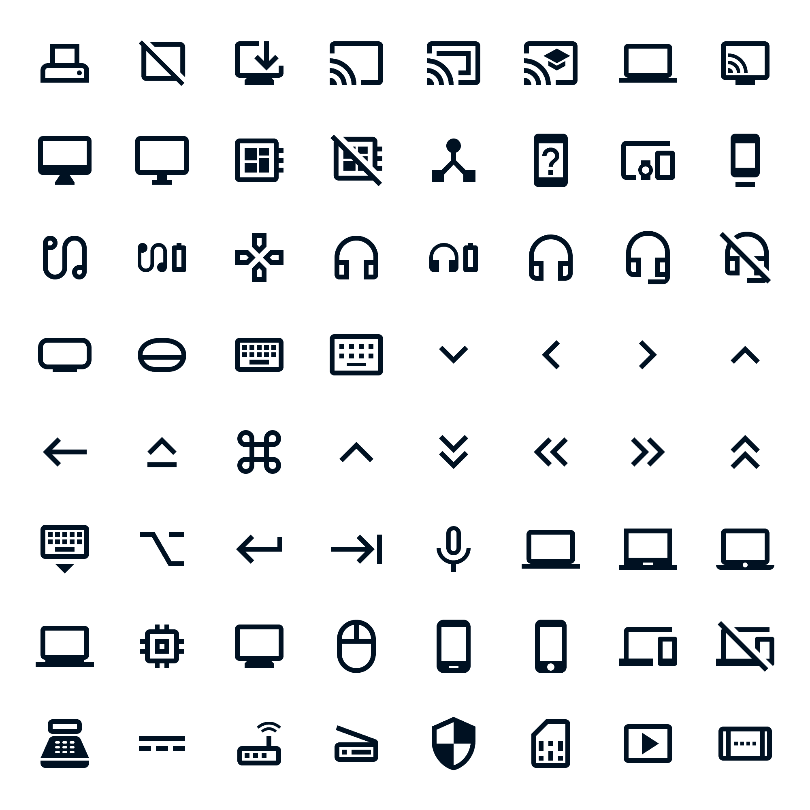

To create a more consistent, scalable, and efficient design process, I led the development of our design system — initially working with a third-party agency before bringing the project in-house to better align with our needs. While the agency helped establish a foundation, the delivered system lacked flexibility and alignment with our design language and workflows. Recognising this, I drove the transition to an internally managed design system, refining the design language, expanding the component library, and working closely with engineering to ensure technical feasibility. By embedding governance and continuous improvement processes, the design system became a core part of our product development workflow. It improved UX consistency, reduced design and development time, and strengthened collaboration between teams.
Without a unified design system, teams were working from fragmented UI patterns and inconsistent components — slowing delivery and creating a disjointed experience across products.
Variations in UI elements across different products created a fragmented experience for users as the team transitioned between UI frameworks.
Without reusable components, design and development teams repeatedly solved the same problems, slowing down delivery.
New features required extensive design effort, as there was no single source of truth for UI patterns.
As the lead liaison with the third-party agency, I worked to define the foundation of our design system — establishing core design principles, foundational components (typography, colour, basic UI), and aligning with product and engineering teams. However, as the project progressed, it became clear the agency's approach lacked the flexibility and scalability required for long-term growth.
We made the strategic decision to take full ownership. This allowed us to:
Evolved the visual and interaction patterns to better align with our products and user needs.
Working closely with engineering, ensured every component was technically feasible and easy to implement using atomic design methodology.
Created clear, accessible documentation to support teams in using the system effectively.
Reviewed and refined interactive elements (tabs, buttons, inputs, dropdowns) to improve style, comprehension and overall usability.
Adjusted colour contrast ratios to meet WCAG AA/AAA standards, ensuring better readability for users with visual impairments, whilst remaining true to marketing brand guidelines.

Iconography

Colour Palettes

Components
Led ongoing audits and updates, close collaboration with development to balance design needs with technical constraints, and scaling the system for future growth by actively managing a backlog of enhancements with engineering teams.
Eliminated inconsistencies across all interfaces. Standardising visual elements, interaction patterns, and design principles created a cohesive and unified aesthetic that strengthened brand identity and enhanced usability.
Reduced design time as designers no longer needed to create patterns from scratch. Engineers could leverage pre-built components, significantly speeding up frontend implementation.
With a shared system in place, UX and engineering worked more seamlessly together, ensuring designs were not only visually consistent but also technically viable.
Through ongoing governance and collaboration, the design system remained adaptable, supporting new product innovations while maintaining a high standard of design quality.